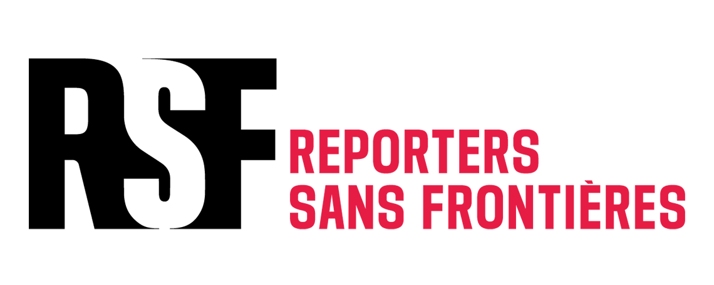

History Of Reporters Without Borders
- 2018 | The Uncensored Playlist
Before the Library existed, RSF Germany and creative agency DDB ran a different censorship-circumvention campaign: the Uncensored Playlist, released on March 12, 2018, in which musicians and journalists teamed up to exploit a loophole in modern-day censorship. Five journalists from five heavily censored countries — China, Vietnam, Uzbekistan, Thailand, and Egypt — partnered with RSF Germany to break through the free-speech blockade using music instead of traditional media. The logic was that strict laws govern the flow of information in mainstream news, but those same laws don't apply to music streaming sites like Spotify, Apple Music, and Deezer, so RSF turned censored articles into song lyrics and released them as an 18-track playlist. This project matters for the timeline because, according to the creative lead who worked on both campaigns, the Library was built two years after the Playlist as the team's next project for RSF — establishing the "loophole" logic (find an accessible platform authoritarian governments haven't thought to block) that the Library would later reuse with Minecraft instead of Spotify.
- Late 2019 to early 2020 | Building the Library
Once the Minecraft concept was chosen, the actual construction was a substantial undertaking. The library was built over three months and is made from over 12.5 million blocks. It took 24 builders from 16 different countries, working roughly 250 hours combined, to design and create the structure. The build was led by Minecraft-specialist studio BlockWorks, working alongside DDB Berlin and MediaMonks. The main dome alone is nearly 300 metres wide, which would make it the second-largest dome in the world if built in real life. The design style was a deliberate choice: BlockWorks chose a neoclassical style associated with government and public buildings — official and powerful — specifically to invert that association, using it to represent the freedom of the press rather than the authority of a regime.
- March 12, 2020 | Launch of The Uncensored Library
The Library opened to the public on March 12, 2020, timed to the World Day Against Cyber Censorship. At launch, it covered five countries — Egypt, Mexico, Russia, Saudi Arabia, and Vietnam — and contained over 200 different books, containing censored articles republished in both English and the original language. The choice of countries wasn't arbitrary: countries were picked by cross-referencing RSF's World Press Freedom Index against Google data on Minecraft's popularity by country, targeting places with both poor press freedom scores and high Minecraft interest.
- 2020, during the pandemic | Covid-19 Room
In response to Covid-19 pandemic, RSF added a dedicated room addressing how the pandemic was affecting journalism. This room contains books on 10 countries — Brazil, China, Egypt, Hungary, Iran, Myanmar, North Korea, Russia, Thailand, and Turkmenistan — showing how coverage of the virus had been restricted or manipulated in each.
- March 2021 | Expansion to Belarus and Brazil
In March 2021, RSF added two new country wings to the Library: Belarus and Brazil. The Belarus wing was added in response to the 2020-2021 Belarusian protests, which were met with a violent crackdown on journalists. The Belarus room publishes articles from the independent website Charter 97, blocked in Belarus since January 2018. The Brazil wing was added in response to the Bolsonaro government's attacks on press freedom, including the arrest of journalists and the spread of disinformation since President Bolsonaro's 2018 election.
- September 2021 | Webby Award
In September 2021, The Uncensored Library won a Webby Award in the category of "Best Activism and Social Change." The Webby Awards are an annual awards ceremony that honors excellence on the Internet, including websites, advertising, video, and social media. The Uncensored Library was recognized for its innovative approach to preserving press freedom and providing access to censored information through a virtual platform. By this point the project's reach had grown substantially: works in the Library had reached more than 25 million gamers across 165 countries, and the campaign had generated more than 850 news articles with a combined media reach of 2.7 billion with all on a media budget of €0, while driving a 62% increase in donations to RSF.
- Late 2021 | Eritrea wing
In late 2021, RSF added a wing for Eritrea, highlighting the country's strict media controls and the challenges faced by journalists. The room, created in collaboration with the Dawit Isaak Library in Malmö, Sweden, marked exactly twenty years since Swedish-Eritrean journalist Dawit Isaak was arrested by Eritrean security officers on September 23, 2001. It features Isaak's own writings, including texts from the book "Hope: The Tale of Moses and Manna's Love." Eritrea was ranked last — 180th out of 180 countries — in RSF's 2021 World Press Freedom Index at the time.
- March 2023 | Expansion of Iran room
In March 2023, RSF expanded its Iran Russia content to include more comprehensive coverage of the country's media landscape and the challenges faced by journalists. The new room on Iran contains information from the US-based Iranian TV channel Iran International, and the Russia room was also expanded. Twenty Minecraft builders from seven different countries worked on the new rooms.
- May 2023 | Peabody Award
The Library was formally honored with a Peabody Award, one of the most prestigious prizes in media and storytelling. RSF, DDB, and Media.Monks received the Peabody Award on May 9, 2023, in the Immersive and Interactive category — though the award recognized the project's 2022 body of work, per Peabody's annual cycle. Peabody's citation described the Library as "a monument to press freedom and an innovative back door for access to censored content," noting that over 20 million gamers in 165 countries had used it to access articles from journalists threatened by regimes in Saudi Arabia, Russia, Mexico, Egypt, and Vietnam.
- 2023 | Official Minecraft.net feature
That same year, Minecraft's own publisher gave the project an official write-up on its site — a notable endorsement, since the Library itself is an unofficial, community/NGO-built server rather than a Mojang product. Minecraft.net's article describes it as "a grand digital library meant to combat censorship," noting the project leverages Minecraft's continued accessibility in countries where social media and other platforms are blocked or controlled.
- March 2026 | US wing
The most recent addition marks a notable shift in the project's scope: for the first time, the Library turned its attention to an established democracy rather than an authoritarian regime. RSF opened the new room to mark World Day Against Cyber Censorship on March 12, highlighting growing obstacles to press freedom in the United States. It focuses on subtler, less direct methods of pressuring the press — since taking office in January 2025, journalists have been arrested, had their homes raided, seen access to public information restricted, and watched government webpages and data deleted. A team of 24 experts from BlockWorks spent three months building the new content, and since its 2020 opening the Library overall has been visited more than one million times, with its books read 10 million times.

The project was motivated by the growing suppression of independent journalism and the recognition that conventional websites and social media platforms are often blocked or heavily monitored in countries with limited press freedom. Rather than creating another online archive vulnerable to the same restrictions, the designers identified Minecraft as an unexpected yet effective medium because the game remained accessible in many of these regions. Their goal was not only to restore public access to censored information but also to engage younger audiences who regularly inhabit digital game worlds. In doing so, The Uncensored Library reframes virtual space as a form of civic infrastructure, demonstrating that entertainment platforms can also function as sites for political expression, public memory, and the defense of freedom of information.

The Uncensored Library is a virtual library built within Minecraft by Reporters Without
By combining digital architecture, archival curation, and interactive storytelling, the project creates an immersive learning experience. The library was constructed using more than 12.5 million Minecraft blocks, with each country represented by a uniquely designed wing whose architectural language reflects its particular political and journalistic context. Censored articles are preserved as interactive in-game books, allowing visitors to read them individually or collectively while navigating the virtual environment. Beyond simply storing documents, the project integrates spatial symbolism, multilingual content, memorial spaces for persecuted journalists, and references to the Press Freedom Index to contextualize each collection. This methodology transforms the archive from a passive repository into an explorable exhibition, where architecture, gameplay, and information design work together to communicate the consequences of censorship and the importance of free access to knowledge.

The Uncensored Library is a virtual library built within Minecraft by Reporters Without Borders (RSF) in collaboration with BlockWorks, DDB Berlin, and MediaMonks. Launched on the World Day Against Cyber Censorship in 2020, the project functions as a digital archive that preserves censored journalism by embedding banned articles into readable in-game books. Organized as a monumental neoclassical library with country-specific exhibition halls, it allows visitors to freely explore reports that have been suppressed by governments while learning about the global state of press freedom. By transforming a popular gaming platform into an accessible archive, the project demonstrates how virtual environments can operate as alternative spaces for knowledge preservation, public education, and resistance to information censorship.

The project was motivated by the growing suppression of independent journalism and the recognition that conventional websites and social media platforms are often blocked or heavily monitored in countries with limited press freedom. Rather than creating another online archive vulnerable to the same restrictions, the designers identified Minecraft as an unexpected yet effective medium because the game remained accessible in many of these regions. Their goal was not only to restore public access to censored information but also to engage younger audiences who regularly inhabit digital game worlds. In doing so, The Uncensored Library reframes virtual space as a form of civic infrastructure, demonstrating that entertainment platforms can also function as sites for political expression, public memory, and the defense of freedom of information.